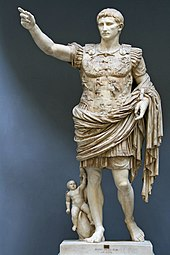
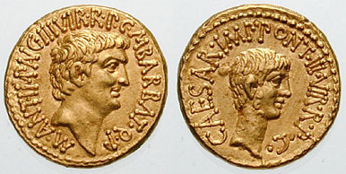
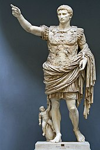
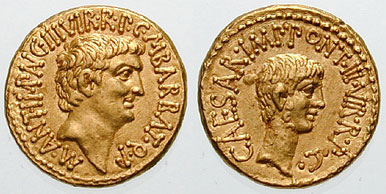

From Wikipedia, the free encyclopedia
The history of the Roman Empire covers the history of ancient Rome from the fall of the
Roman Republic
in 27 BC until the abdication of
Romulus Augustulus
in AD 476 in the West, and the Fall of Constantinople in the East in AD 1453. Ancient Rome became a territorial empire while still a republic, but was then ruled by Roman emperors beginning with Augustus (r. 27 BC – AD 14), becoming the Roman Empire following the death of the last republican dictator, the first emperor's adoptive father Julius Caesar.
27 BC–AD 14: Augustus
Further information:
Praetorian Guard, Roman triumph, Battle of the Teutoburg Forest, Arminius,
and Publius Quinctilius Varus
Octavian, the grandnephew and adopted son of Julius Caesar, had made himself a central military figure during the chaotic period following Caesar's assassination. In 43 BC, at the age of twenty he became one of the three members of the Second Triumvirate, a political alliance with Marcus Lepidus and Mark Antony.[17] Octavian and Antony defeated the last of Caesar's assassins in 42 BC at the Battle of Philippi, although after this point tensions began to rise between the two. The triumvirate ended in 32 BC, torn apart by the competing ambitions of its members: Lepidus was forced into exile and Antony, who had allied himself with his lover Queen Cleopatra VII of Egypt, committed suicide in 30 BC following his defeat at the Battle of Actium (31 BC) by the fleet of Octavian. Octavian subsequently annexed Egypt to the empire.[18]
Now sole ruler of Rome, Octavian began a full-scale reformation of military, fiscal and political matters. The Senate granted him power over appointing its membership and several successive consulships, allowing him to operate within the existing constitutional machinery and thus reject titles that Romans associated with monarchy, such as rex ("king"). The dictatorship, a military office in the early Republic typically lasting only for the six-month military campaigning season, had been resurrected first by Sulla in the late 80s BC and then by Julius Caesar in the mid-40s; the title dictator was never again used. As the adopted heir of Julius Caesar, Octavian had taken "Caesar" as a component of his name, and handed down the name to his heirs of the Julio-Claudian dynasty. With Vespasian, one of the first emperors outside the dynasty, Caesar evolved from a family name to the imperial title Caesar.
Augustus created his novel and historically unique position by consolidating the constitutional powers of several Republican offices. He renounced his consulship in 23 BC, but retained his consular imperium, leading to a second compromise between Augustus and the Senate known as the Second settlement. Augustus was granted the authority of a tribune (tribunicia potestas), though not the title, which allowed him to call together the Senate and people at will and lay business before it, veto the actions of either the Assembly or the Senate, preside over elections, and it gave him the right to speak first at any meeting. Also included in Augustus's tribunician authority were powers usually reserved for the Roman censor; these included the right to supervise public morals and scrutinise laws to ensure they were in the public interest, as well as the ability to hold a census and determine the membership of the Senate. No tribune of Rome ever had these powers, and there was no precedent within the Roman system for consolidating the powers of the tribune and the censor into a single position, nor was Augustus ever elected to the office of Censor. Whether censorial powers were granted to Augustus as part of his tribunician authority, or he simply assumed those, is a matter of debate.
In addition to those powers, Augustus was granted sole imperium within the city of Rome itself; all armed forces in the city, formerly under the control of the prefects, were now under the sole authority of Augustus. Additionally, Augustus was granted imperium proconsulare maius (literally: "eminent proconsular command"), the right to interfere in any province and override the decisions of any governor. With imperium maius, Augustus was the only individual able to grant a triumph to a successful general as he was ostensibly the leader of the entire Roman army.
The Senate re-classified the provinces at the frontiers (where the vast majority of the legions were stationed) as imperial provinces, and gave control of those to Augustus. The peaceful provinces were re-classified as senatorial provinces, governed as they had been during the Republic by members of the Senate sent out annually by the central government.[19] Senators were prohibited from so much as visiting Roman Egypt, given its great wealth and history as a base of power for opposition to the new emperor. Taxes from the imperial provinces went into the fiscus, the fund administered by persons chosen by and answerable to Augustus. The revenue from senatorial provinces continued to be sent to the state treasury (aerarium), under the supervision of the Senate.
The Roman legions, which had reached an unprecedented 50 in number because of the civil wars, were reduced to 28. Several legions, particularly those with members of doubtful loyalties, were simply disbanded. Other legions were united, a fact hinted by the title Gemina (Twin).[20] Augustus also created nine special cohorts to maintain peace in Italia, with three, the Praetorian Guard, kept in Rome. Control of the fiscus enabled Augustus to ensure the loyalty of the legions through their pay.
 



Sources
The Augustan Age is not as well documented as the age of Caesar and Cicero. Livy wrote his history during Augustus's reign and covered all of Roman history through to 9 BC, but only epitomes survive of his coverage of the late Republican and Augustan periods. Important primary sources for the Augustan period include:
- Res Gestae Divi Augusti, Augustus's highly partisan autobiography,
- Historiae Romanae by Velleius Paterculus, the best annals of the Augustan period,
- Controversiae and Suasoriae of Seneca the Elder
Vlad the Impaler (Vlad III, Prince of Wallachia):
Vlad III, commonly known as Vlad the Impaler or Vlad Dracula, was a 15th-century ruler of Wallachia with a notorious reputation for his harsh methods of dealing with enemies. Born around 1431, Vlad earned his infamous moniker due to his penchant for impaling adversaries on long spikes. While his reign was marked by cruelty, Vlad also sought to defend Wallachia against external threats, particularly from the Ottoman Empire. The exact date of his death is uncertain, but it is generally believed to be around 1476.
Mihai Viteazul (Michael the Brave):
Michael the Brave, born around 1558, was a significant 16th-century ruler who briefly achieved the unification of Wallachia, Moldavia, and Transylvania. Known for his military prowess and strategic acumen, Michael sought to counter the influence of the Ottoman Empire and Habsburgs in the region. His reign, though short-lived, left a lasting impact on Romanian history. Michael the Brave passed away in 1601.
Ștefan cel Mare (Stephen the Great):
Ștefan cel Mare, or Stephen the Great, was a 15th-century voivode of Moldavia, renowned for his military successes and steadfast defense of his principality. Born around 1433, Stephen faced numerous challenges, including invasions by the Ottomans and other neighboring powers. Despite facing overwhelming odds, he earned a reputation as a capable military leader. Stephen the Great's rule, characterized by victories in battles such as Vaslui and Valea Albă, solidified his place in Romanian history. He passed away in 1504, leaving behind a legacy as a defender of Moldavia.